These dock options are the just some of the available features and options to set your dock apart from all others. The design elements and functional pieces shown here are all available through your Flotation Systems dealer.
These dock options are the just some of the available features and options to set your dock apart from all others. The design elements and functional pieces shown here are all available through your Flotation Systems dealer.
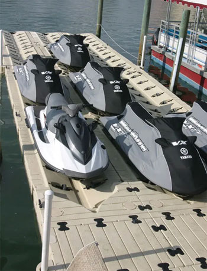
If you have a boat or PWC, the ease and safety of a lift is essential. Flotation Systems offers a range of ways to keep your vessel dry, clean, and secure.
For stationary docks, we can provide mounting and materials for overhead lifts. Your lift will be installed when your dock is constructed on-site. For floating docks, we offer the even weight distribution of tank-style lifts that connect at four points inside the slip.
Personal watercraft lifts are available as overhead lifts for stationary docks and drive-on lifts for floating docks. Each installation is different, based on brand and style of lift you select. Your Flotation Systems dealer will be happy to help you select the right lift for your needs.
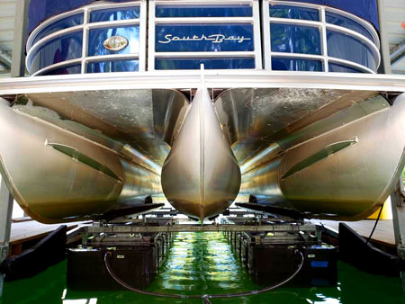
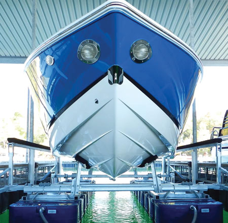
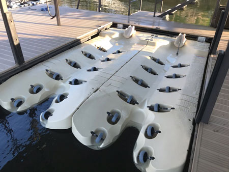
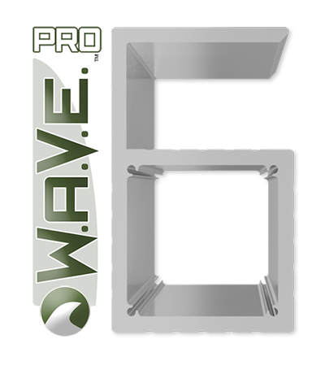
An expanded option from our standard 4” post, the WAVEPro 6 is a newly designed 6” post solution for taller dock builds and rough water situations. This substantial post brings a defined esthetic to overall dock image, as well as stability in more demanding lake environments.
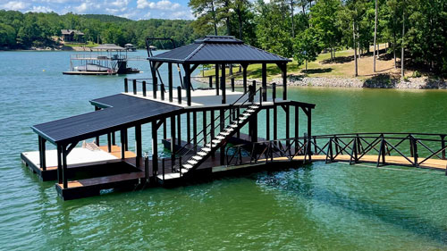
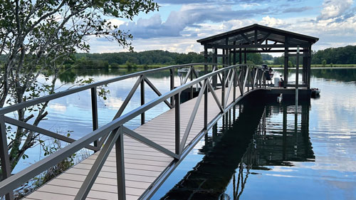
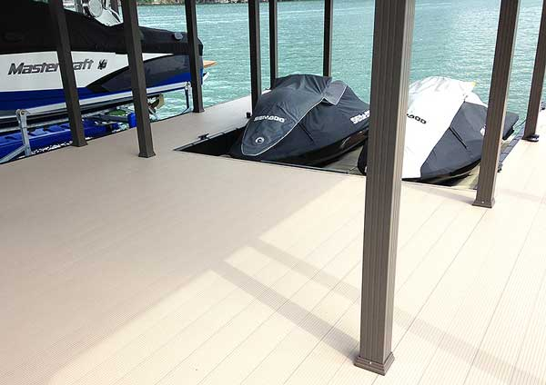
Our slip fill-ins are designed to convert unused slips into useful space for seating or personal watercraft storage. Used in multi-slip docks that only need one slip now, a fill-in is the perfect way to maximize your space while keeping your dock ready until the slip is needed.
Fill-ins are available for any size Flotation Systems slip, and are custom-made to suit your application. The slip can be entirely enclosed, or space can be left—as a 45-degree “V” or square end—in the fill-in for smaller watercraft docking.
Slip fill-ins are installed when the dock scan be installed during initial dock installation or at a later date. Stable and beautiful, each fill-in looks and acts as part of the dock, featuring the same LockDry decking used on the regular platform. When you are ready to add a boat, the fill-in can be removed and your dock converted to part or full slip capacity.
Please note that our slip fill-ins are not intended for repeated installation and removal.
Want the look of traditional wooden decking? Flotation Systems offers a beautiful, durable woodgrain, slip-resistant decking option – without the costly maintenance issues of real wood. This wood-free composite lumber is splinter-free and resists mold, mildew, pests, stains and fading. Designed to reduce heat absorption, WearDeck is safe, cool and comfortable for barefeet during hot summer temperatures and cleans easily with soap and water. Choose from 8 available colors to enhance your dock design for a sleek look that will last a lifetime. See your Flotation Systems dealer for details.
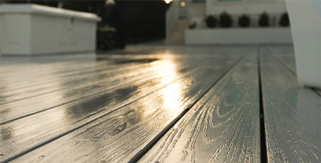
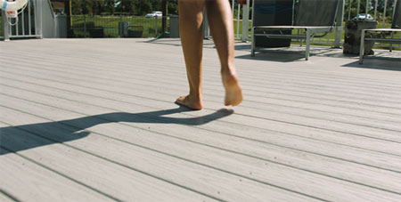
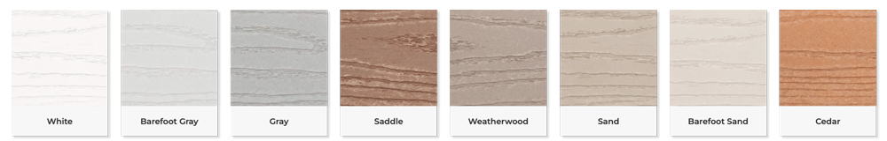
The Lumberock Coastal Collection is designed for a wide range of waterfront and marine applications, providing unmatched strength and resilience for docks, bridges, gangways, decks, and marinas.
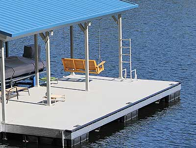
The ultimate in warm-weather fun, our swim platforms deliver wide, sun-kissed footage and provide the perfect place for recreation and entertaining.
Each swim platform is a perfectly integrated extension of the main dock, giving maximum space for all the fun a day (or night) has to offer.
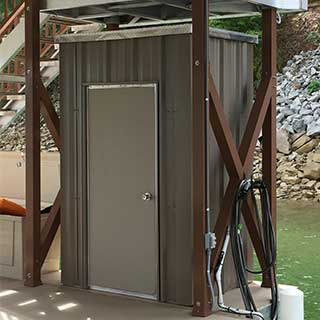
Dock-side storage for everything that completes your life on the water. Our fully enclosed storage closets/dock lockers come can be located on the main dock floor under the roof, or on their own independent platform outside the roof line.
Closets are equipped with lockable utility doors and are available in two sizes: 3.5’ x 5.5’ x 7’ and 4’ x 8’ x 7’. They feature the same durable aluminum interior construction as our full docks, including 26-gauge exterior walls, and are available in 17 color choices.
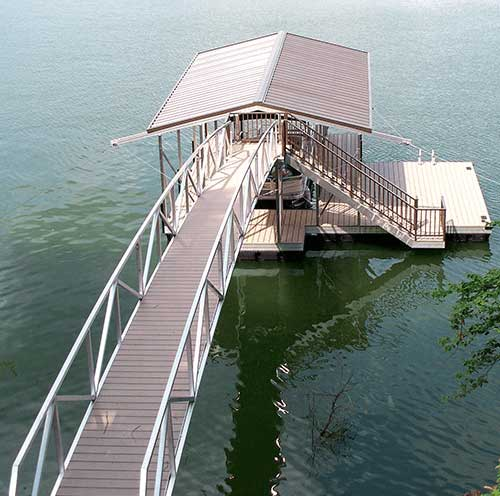
Our dock stairs are Flotation Systems innovation at its finest. Elegant cantilevered stairs are available for dock access from lake property with steep or high elevations.
Stairs can be added to either the gable or hip roof models and are available in widths from 30” to 36”, cantilevered over the water to keep your dock surface free and the dock footprint small.
Stairs are included with every sundeck and sundeck combo dock and are optional as the descent from a ramp to a roofed dock. All feature the same lightweight and strong construction as our full docks and integrate elegantly into the look and feel of your dock design.
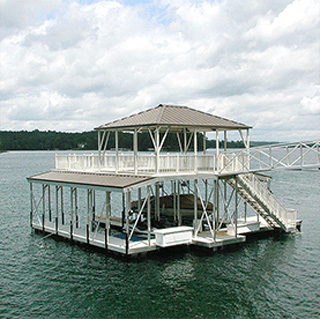
Create an oasis retreat from sun and weather by adding a gable or hip shade to your platform, pier, or upper-level dock with our roofed shades. Specially designed to match our deck and roof styles, each provides the ideal place for lounging, grilling, and visiting with friends and family; a ready retreat from sun or weather anywhere on your sundeck, platform, or pier.
Choose from hip or gable roofs, in aluminum and featuring the same roof colors as our full docks. See your Flotation Systems dealer for details.
Elegant and secure railings are available on all docks. Available in five durable finishes, our railings add beautiful detail and enhance the safety of your guests as well as providing dock access control when combined with our lockable gates.
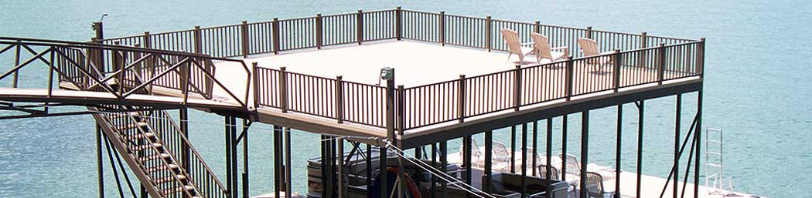
Our cable rails provide a more modern, contemporary appearance. You'll love the sleek, clean finish and sturdy stylings. A clear PVC finish prevents rust and abrasion, while delivering a soft touch with additional longevity and value.
Available for Sundeck and Sundeck Combo Docks
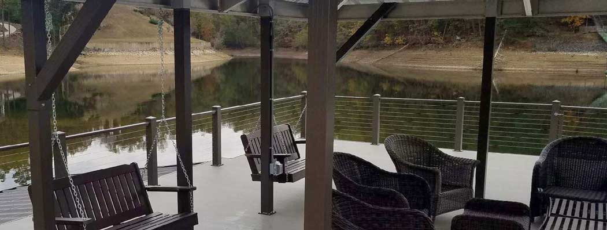
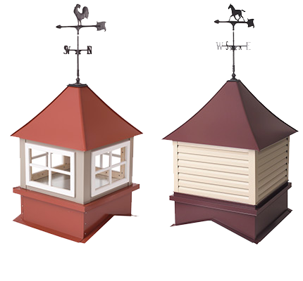
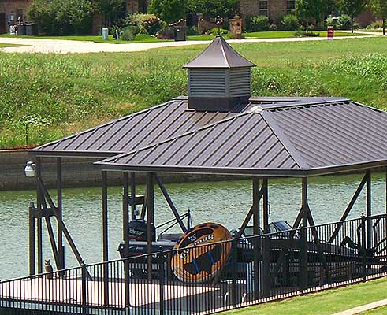
Add flair to the top of your hip roof dock or hip shade with a decorative cupola. Available with louvers or four-pane glass windows and with or without weather vane, our cupola provides fine architectural detail. Window panes may optionally be lighted from within for an elegant nighttime look.
From storage to seating, stairs and slides, we have the boat dock accessories to enhance the fun, function, and safety of your aluminum boat dock.
Take the work out of your weekend on the water…cover your boat in 60 seconds or less with the world’s most innovative boat protection system. Our team will measure and model your boat using state-of-the-art digital tools to craft a one-of-a-kind cover unique to your vessel, ensuring a precise fit for a tighter seal and cleaner boat. We connect your custom cover to the patented track system so it glides on and off your boat like pulling a curtain. It works without power, so it’s always dependable, safe, and easy. No more snapping, crawling, or sweating
Few docks are the same. Our team will tailor installation based on your dock’s needs, and our system uses clamps instead of screws to avoid permanent damage to your dock.
Available in 5 colors: Basic Beige, Charcoal Gray, Black Onyx, Atlantic Blue and Slate Gray.
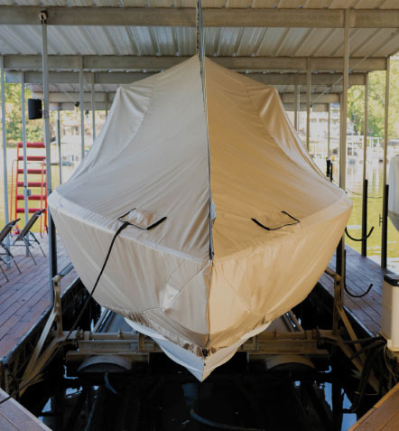
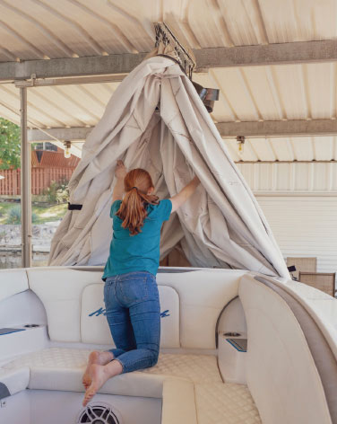
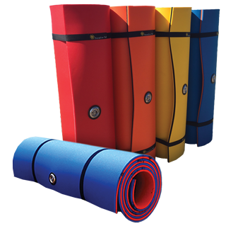
We now offer the ParadisePad, the foam water pad built to withstand 1450 – 1800 pounds. ParadisePads are durably built using UV protection with no adhesives, making them the most durable rafts on the market. They are equipped with the necessary bands, letting you take your paradise wherever you go. All pads are made and manufactured in the USA. The ParadisePads come in a wide range of styles, sizes, and colors. No matter the occasion, there is a perfect pad for you, your family, and your friends.
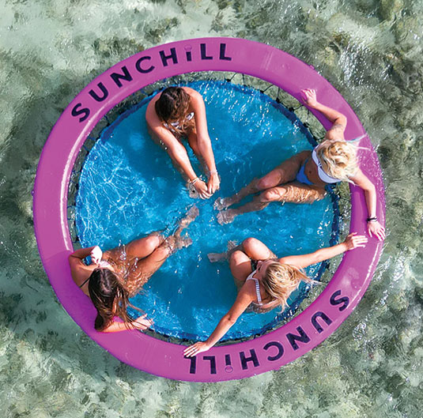
Introducing the best way to float the day away. Say goodbye to flimsy, floating mats of yesteryear and say hello to the Sunchill. Comfort is a big thing, right? It's also our main focus. The Sunchill is made with high tech poly-pro fabric netting that flexes ever so slightly for a completely relaxing, super durable, comfortable experience that is built to last in the sun and salt. Designed to inflate in only 90 seconds and stored with ease, the Sunchill weighs just 18 pounds and rolls up to the size of a sleeping bag. No more cruising around with a bulky lake float in tow! All smiles, all day!
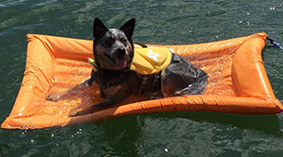
We all want our dogs on the water with us as we relax and enjoy the day and although swimming is great exercise, dogs can tire fairly quickly. They need a place to rest. Human floats are inflatable and often destroyed when our animals attempt to climb aboard. The solution is simple: Get a Lazy Dog Lounger for your furry friends. The Lazy Dog Lounger was specifically designed to be semi-submersible allowing your dog to stay cool while they rest.
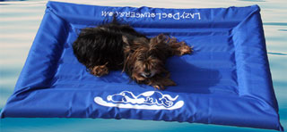
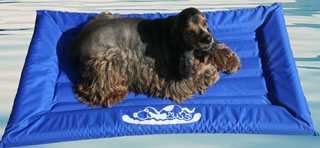
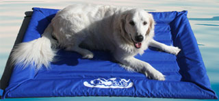
Finally, your pup can join you on your water adventures with ease! This Dog Ramp is a strong, rigid, and reliably sturdy docking platform with enhanced sidewall protection. The ramp is portable so you can take it anywhere, inflates and deflates in minutes, comes with heavy- duty carrying handles and integrated stainless steel d-rings for anchoring. Easily stow in boat compartments or other small spaces. Tested for dogs up to 140 lbs.
Weight 12 lbs. 50"x32"x5". Includes hand pump, 2 ropes, storage bag and repair kit.
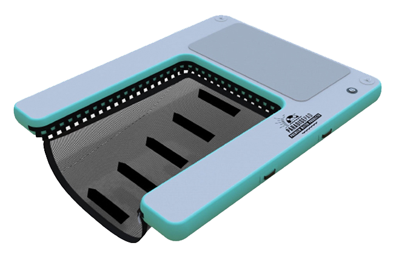
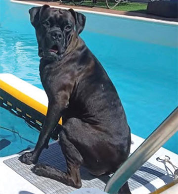
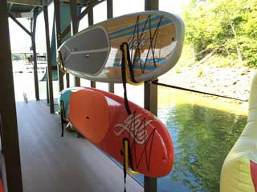
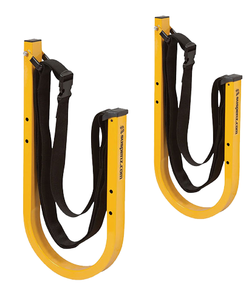
Keep your paddleboards, wakeboards, and surfboards suspended and out of the way with a Suspenz™ SUP Rack. Designed to have no pressure points, your boards remain free of dings and you can rest easy knowing your boards will never touch a hard surface. Kayak and canoe racks also available.
Included in the box:
Two (2) SUP Bars w/ straps
Wall mounting hardware
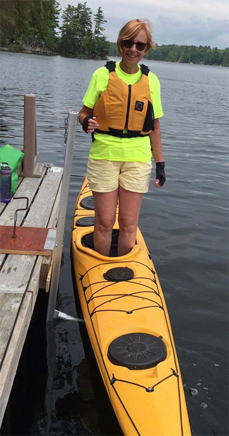
KayaArm is the revolutionary kayak launch stabilizing device that has made it safer to enter and exit your kayak at your dock. Getting into, launching, and getting out of a kayak has never been this easy. It is also designed to be used for kayak storage at the dock, as well as mounted on the garage, shed or carport wall to provide winter storage for your kayak. Easy to install and use!
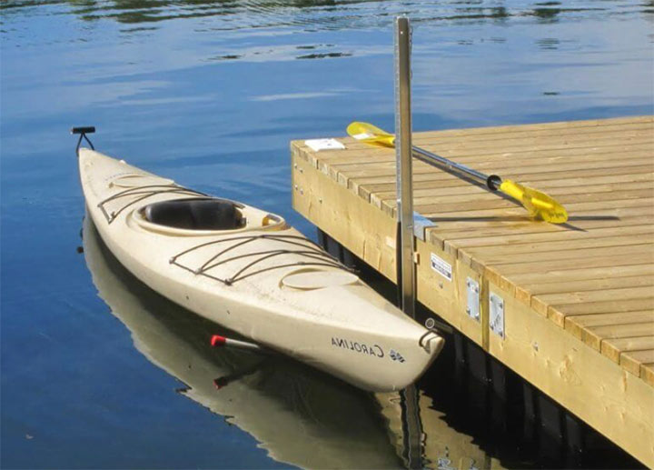
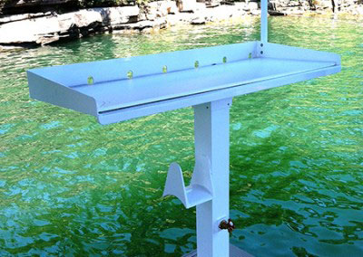
From water to table, our dock fillet stands make it easy to handle your prize catch.
Available in two sizes, our sturdy flat stands mount directly to your dock to provide a stable flat surface for cleaning fish.
With a 1/2″ Starboard cutting surface, tall edges on three sides to keep your catch on-board, hang hook, and drainage slots for easy cleaning, they’re a fisherman’s dream.
Most people don't have a place to clean fish that they are proud of or enjoy using. KillerDock stations make “the greatest fish cleaning stations known to man”. While it looks like a show pony, make no mistake, it is a work horse that can easily handle the rigors of any fish cleaning abuse. Marine-grade aluminum, protected by anti-corrosion clear coating, is built to withstand 150 mph wind conditions. The patented table leg intake and draining system sets the standard for fish cleaning ease. With standard features and available upgrades, you are in control of the final design of your station
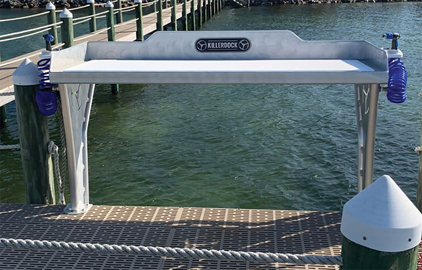
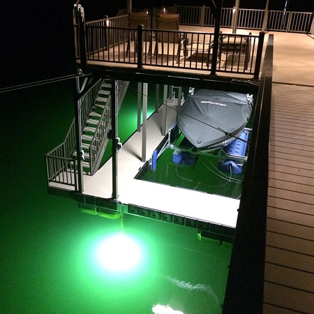
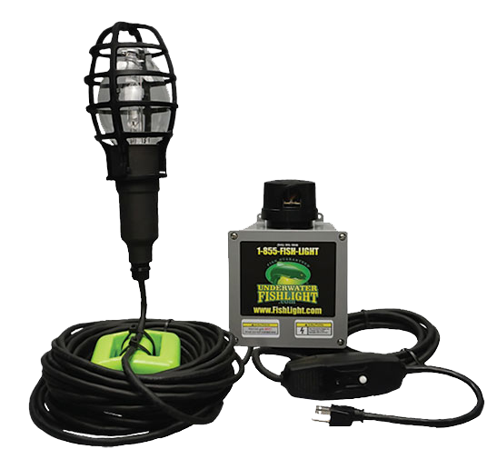
The Underwater Fishlight is the ultimate in submersible lights.
Turn any dock into a hot nighttime viewing or fishing spot, or cast a new glow on your next lake party with lighting your friends (and fish) will love.
Proven to attract all types of fish, the Underwater Fishlight can be used in both fresh and salt water. The light kit is equipped with a GFCI plug for additional safety and a photocell that automatically turns it on at dusk and off each morning.
Pair it with Flotation Systems’ hook bracket to protect the lights from fishing lines or ropes (extends to 11’ water depth).
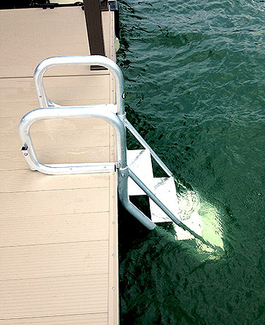
Easy in, easy up, easy out—these boat dock ladders are strategically designed to make your water time a pleasure.
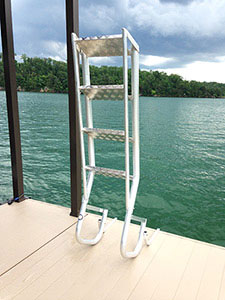
The four 8″ wide textured aluminum steps with grab rails and top loops make it a breeze to get out after your swim. With the AquaStair swim ladder there is no need for climbing out of the water… you simply walk out. From children and adults to the elderly and even pets, the AquaStair does not discriminate. It’s comfortable and convenient for the entire family.Flip-up design lets your dock stairs stow safely topside when not in use.
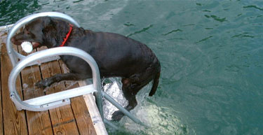
And naturally – because it’s from Flotation Systems – it’s made of durable and corrosion-resistant 6063 marine-grade aluminum, to last as long as your dock.
Available in 4 and 5 step configurations. (6/7 step available upon request)
Take your summer fun to a whole new level with a LilliPad Diving Board on your boat! LilliPad boat diving boards are installed with a modular mounting system that allows the diving board to be set up or removed from the boat in less than two minutes. Once set up, let the fun begin! The spring action of this boat diving board keeps kids coming back for more and parents love that the innovative design transfers minimal force to the boat creating a perfect time to relax while the kids play! (This diving board is a parent’s dream come true!) Available in a variety of colors and finish options to match your boat.
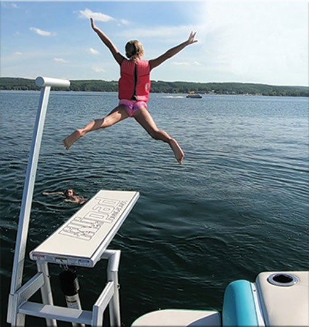
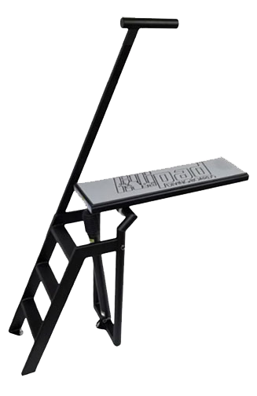
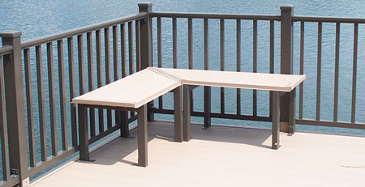
Take a seat and relax in style. Flotation Systems offers sturdy, durable, 6-foot long benches for easy waterside seating on any brand of dock.
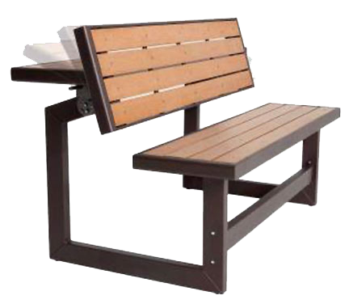
Create the perfect place to enjoy a nice afternoon with this ideal addition to your dock. Constructed of weather-resistant polystyrene simulated wood, the bench features an easy one-person conversion from bench to table in seconds. This versatile bench is UV-protected and will not fade, crack, chip or peel. Unlike wooden benches, the polystyrene will not splinter and never needs to be painted or varnished. The steel frame has a powder-coated, rust-resistant finish to ensure that your bench will last for years. Available Colors: Buckskin and Granite Gray.
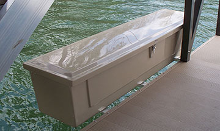
Tough beautiful dock lockers for anything and everything storage on your dock.
Included mounting brackets allow dock boxes to be cantilevered over the water, providing maximum storage while saving valuable deck space.
Flotation Systems dock boxes are available in white, granite gray, or buckskin finishes and lockable with your lock.
Choose our large dock locker, 84″ x 20″ x 18″, or jumbo dock locker, 72″ x 26.5″ x 27.5″
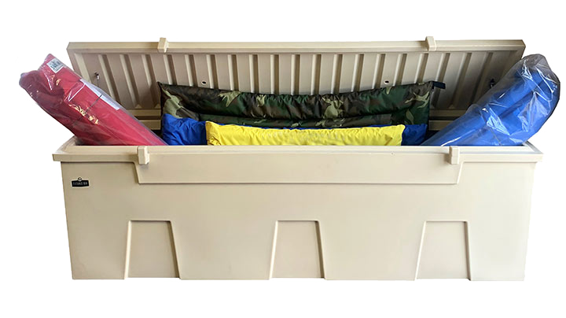
TitanSTOR™ dock boxes are packed with features that matter to boaters. This is one tough box and provides ample storage for popular water recreational toys, fishing poles, skis, rafts, tubes. Screens in the louvered vents keep aquatic equipment dry, prevent mold/mildew buildup, and keep pests out! Theft deterrent mold-in hinge design and keyed-alike lock provide optimal security and safety for valuable assets. Stainless steel mounting kit included. Available in gray and tan.
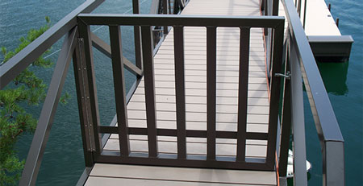
Security for where you need it and for where the law requires it.
Our aluminum latching gangway gates provide a visible deterrent to entry feature a lockable hasp. For use with Flotation Systems docks only.
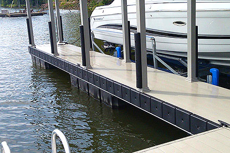
The best protection you can get for your watercraft, Flotation Systems dock bumpers deliver versatile resistance to impact and scraping.
Specially designed to fit anywhere protection is needed, our dock bumpers can be mounted vertically or horizontally to cover slips, interior dock posts, and all edges of swim platforms. Available in classic and new Super Cushion (shown).
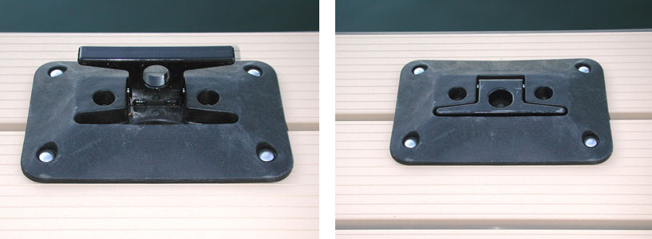
Sleek and sturdy dock cleats for securing watercraft. Choose from our traditional fixed 8” cleat or our unique folding cleats, ideal for swim platforms, sunning areas, and other walking surfaces.
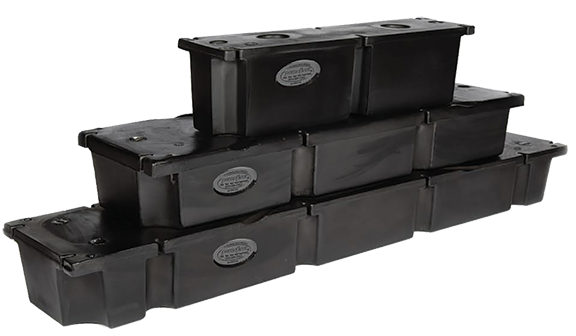
The very foundation of every dock is a quality float, and our boat dock floats set the standard for performance and durability. They keep your dock afloat. This is no place to cut corners, and we don’t.
Our EPS billets are manufactured by nationally recognized companies. These foam-filled, rotomolded polyethylene encasements meet or exceed all U.S. Army Corps of Engineers regulations and are unaffected by salt water, virtually all chemicals and are covered by our exclusive limited lifetime warranty.
Flotation billets are attached to the mainframe using 3/8” stainless steel bolts, 1” stainless steel fender washers and are secured by using nylon lock nuts. The result: floats that remain secure under severe conditions, without separation or movement.

Copyright © Flotation Systems, Inc.,
All rights reserved.


Business Hours: M-F, 8AM-5PM